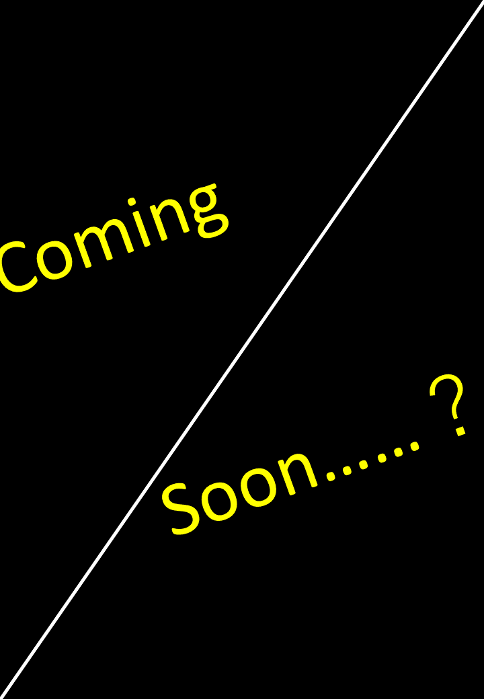
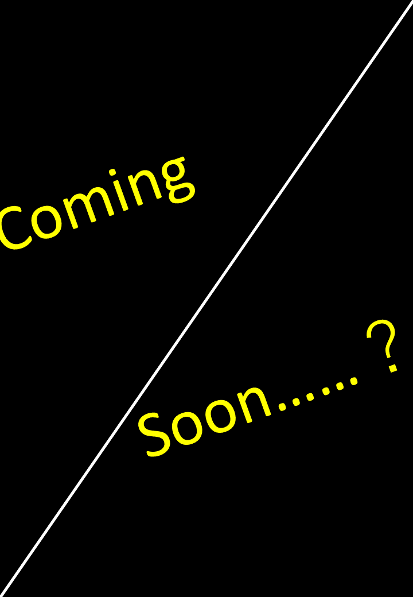

W e l c o m e t o O u r S t o r y
文塵ト淀の作品集へようこそ
心躍る
気持ち安らぐ
勇気溢れる
くすりと笑える
そんな物語を、あなたに
「内緒、ですよ」
「だからアレは、呪滓」
「では、また逢う日まで」
「輪廻転生？観念に魂があるっていうのか」
「どうして殺さぬのだ。速く殺さぬか。そやつは罪人なのだぞ」
「ぽよーん」
「向上心を、持ちなさい。君ならもっと上も目指せます」
「役者が揃わないとドラマは始まらないんだ」
「借りたら返さなきゃだよ」
「私は罪など犯していないさ」
「あると思えば」
「夜更かしでもしていたんですか？」
「なら、もう、いいか」
「夢は趣味でいい。ロックはポップでいい」
「だけどまァ、せめてゆっくり来てくれよ」
「煙草、一本くれませんか」
文塵ト淀は2022年に活動を開始した文字書きや絵描きの創作サークルです。
過去にメンバー七名が執筆、四名が制作に協力した短篇集「蹄栞」を発行。一部で好評を博しました。
作風に一貫性はなく、各々が好みの文体、価値観で創作を楽しんでいます。
今後も短篇集の発行を継続しつつ、より活発に活動していきます。
 

活動分野
小説
文塵ト淀は文字書きの比率が非常に高いサークルです。SF長編からコメディ短編まで幅広いジャンルをカバーしています。
それぞれがそれぞれの個性を遺憾なく発揮した文章を魅せており、スラスラ読める文章や奥の深い文章、繊細な心情を描く文章に鮮明に情景が浮かぶような文章まで様々です。探せば好みの文章がひとつは見つかるでしょう。
絵
絵を専門に活動しているメンバーの数は多くありませんが、辛うじて存在しています。
現状約二、三名ほどのメンバーが絵を練習している様子を観測していますが今後に期待と言ったところです。短篇の表紙や挿絵を自給自足できるようになれば……というのが我々の総意です。
プログラム
プログラムを書けるメンバーも居るにはいます。初歩的なことを始めとして細々と活動しています。
文塵ト淀ではDressというDiscordBOTを利用しています。Dressは文塵ト淀内部のみで開発、稼働しているBOTで様々な機能を保有しており、日々の活動を便利なものにして？ います。このホームページもメンバーが制作しています。